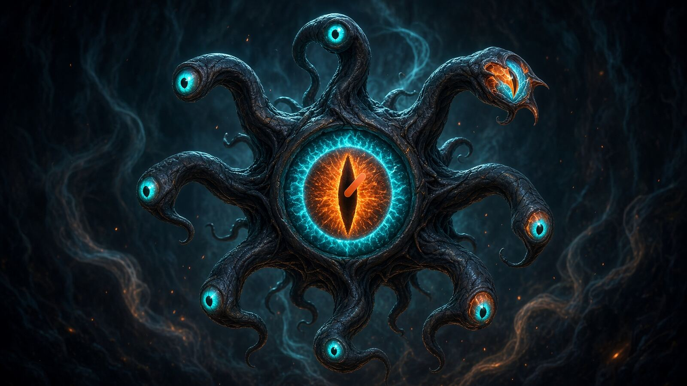

Memória residente
RSS por processo, lido de VmRSS. O pico da janela fica sempre visível ao lado do valor corrente.

Muitos olhos sobre um só sistema. RSS, CPU e VRAM da NVIDIA observados em janela contínua — para quem caça vazamentos onde eles se escondem.
Beholder observa processos no Linux e guarda o que viu. Memória residente, uso de CPU e — quando há uma NVIDIA na máquina — a VRAM de cada processo, tudo numa janela de tempo que você escolhe. A mesma máquina de estado atende o painel gráfico e o modo MCP, de modo que um agente enxerga exatamente o que você enxerga.
Dois modos de leitura: Dev (imersivo, com a arte e o diagrama da troca MCP) e IA (ficha clara e densa, o mesmo texto sem enfeite). Use Copiar contexto para IA para levar o guia inteiro como Markdown.
RSS por processo, lido de VmRSS. O pico da janela fica sempre visível ao lado do valor corrente.
Memória da placa e por processo, via NVML em processo. Sem GPU, degrada para N/A sem derrubar nada.
Por PID, por nome exato (comm) ou por trecho da linha de comando completa.
30 s, 5 min, 30 min ou 1 h. Acima de 1200 pontos, o buffer reduz por bucket sem inventar timestamps.
JSON-RPC por stdin/stdout. Paridade integral com a GUI — mesma Model, mesma semântica.
CSV achatado para planilha, JSON estruturado com séries separadas de RAM e VRAM.
cargo build --release
./target/release/beholderO modo padrão. Adicione alvos pelo campo superior, escolha a janela e acompanhe as séries.
./beholderSem janela. Lê requisições JSON-RPC de stdin e responde em stdout — o formato que um agente consome.
./beholder --mcp./packaging/build-deb.sh
sudo apt install ./dist/beholder_*.debdpkg-dev. Os ícones em packaging/icons/ são gerados a partir da arte do projeto e só precisam ser refeitos se ela mudar.{
"name": "Beholder",
"kind": "system-monitor",
"summary": "Linux process monitor with NVIDIA VRAM tracking",
"platform": "linux",
"language": "rust",
"rust_min_version": "1.75",
"license": "MIT",
"entrypoints": {
"gui": "./beholder",
"mcp": "./beholder --mcp"
},
"build": "cargo build --release",
"test": "cargo test --all",
"spec_docs": "docs/00-brief.md .. docs/06-discretion.md"
}| Métrica | O que é |
|---|---|
| RSS | Resident Set Size — a memória física que o processo ocupa na RAM neste instante. Vem de VmRSS. |
| CPU% | Uso de CPU normalizado pelo número de núcleos. |
| VRAM Total | Memória total da placa (GPU 0). |
| VRAM Used | Memória em uso na placa inteira, não apenas pelo alvo. |
| VRAM Free | Memória de placa ainda disponível. |
| VRAM (proc.) | Memória de GPU atribuída a um processo específico. |
| Pico | O maior valor dentro da janela atual — não do histórico inteiro. |
O buffer guarda no máximo 1200 pontos por série. Quando a janela é longa demais para caber nesse teto, os pontos são agrupados em buckets.
| Série | Redução por bucket | Razão |
|---|---|---|
| RAM | max | O gráfico mostra o envelope de pico — é o que importa num vazamento. |
| VRAM | max | Mesma lógica da RAM. |
| CPU% | last | Pico de CPU é ruído; o valor recente é o sinal. |
O tamanho efetivo do bucket é max(intervalo_ms, janela_ms / 1200). Intervalos disponíveis: 100 ms, 250 ms, 500 ms, 1 s e 2 s.
{
"buffer": {
"max_points_per_series": 1200,
"eviction": "time-based, by window_secs",
"downsample": {
"rss_bytes": "max per bucket",
"vram_bytes": "max per bucket",
"cpu_pct": "last per bucket"
},
"bucket_ms": "max(interval_ms, window_ms / 1200)",
"timestamps": "from the producing sample; never interpolated",
"monotonic": true
},
"intervals_ms": [100, 250, 500, 1000, 2000],
"windows_secs": [30, 300, 1800, 3600],
"pid_reuse_detection": "via /proc//stat starttime",
"vram_absent_behavior": "degrade to null; never panic"
} Direto ao ponto quando você já sabe o número. Reciclagem de PID é detectada pelo starttime do processo, então um PID reaproveitado não é confundido com a continuação do anterior.
Casa com o comm — o nome curto, limitado a 15 caracteres no Linux. Adiciona todos os processos vivos com aquele nome de uma vez.
Busca na cmdline completa. É o que resolve quando o binário se chama node mas o que você quer é o processo que roda determinado script.
ts_ms,pid,name,rss_bytes,cpu_pct,vram_bytes
1697125200000,1234,python3,524288000,25.5,1073741824
1697125200500,1234,python3,536870912,26.0,1107296256{
"config": { "interval_ms": 500, "window_secs": 300 },
"targets": [{
"pid": 1234,
"name": "python3",
"ram_samples": [{ "ts_ms": 1697125200000, "rss_bytes": 524288000 }],
"vram_samples": [{ "ts_ms": 1697125200000, "vram_bytes": 1073741824 }]
}]
}Um binário, um processo do sistema operacional. Nenhum sidecar em outra linguagem, nenhum HTTP entre as partes.
| Camada | Responsabilidade |
|---|---|
| crates/core | Amostragem, buffer em anel, máquina de estado. Sem nenhuma dependência de UI. |
| crates/app | Casca egui. Apenas View e despacho de Msg — nenhuma lógica de domínio. |
| Fluxo | Elm-style unidirecional: Msg → update → Model → View. |
| NVML | Em processo, nunca por CLI. Latência baixa e ausência tratada com elegância. |
As especificações em docs/00-brief.md até docs/06-discretion.md são canônicas: valem mais do que o que o código porventura esteja fazendo.
| Ferramenta | Parâmetros | Retorno |
|---|---|---|
| health | {} | versão, estado do sampler, disponibilidade de NVML, config |
| list_targets | {} | alvos com alive e added_at |
| add_target_pid | { pid } | { added, pid, name } |
| add_target_name | { name, mode } | lista de alvos adicionados |
| remove_target | { pid } | { removed, pid } |
| set_interval_ms | { interval_ms } | { interval_ms, effective_bucket_ms } |
| set_window_secs | { window_secs } | { window_secs, effective_bucket_ms } |
| clear_buffer | {} | { cleared, samples_removed } |
| get_live | {} | amostra corrente por alvo (RAM + VRAM) |
| get_vram | {} | { gpu_id, total, used, free } |
| window_stats | {} | pico, corrente e contagem por métrica |
| export_buffer | { format } | csv string ou objeto json |
add_target_name.mode aceita "exact" (casa com comm) ou "substring" (busca na cmdline, sem distinção de maiúsculas).
get_liveAgente → BeholderUma requisição JSON-RPC por stdin, com o binário em ./beholder --mcp.
{ "jsonrpc": "2.0", "id": 1, "method": "get_live", "params": {} }A amostra corrente de cada alvo, RAM e VRAM.
{
"jsonrpc": "2.0",
"id": 1,
"result": {
"timestamp_ms": 1697125200000,
"samples": [
{ "pid": 1234, "name": "python3",
"rss_bytes": 524288000, "cpu_pct": 25.5, "vram_bytes": 1073741824 },
{ "pid": 5678, "name": "cargo",
"rss_bytes": 804453376, "cpu_pct": 0.0, "vram_bytes": null }
]
}
}vram_bytes: null significa uma de duas coisas: não há NVIDIA disponível, ou o processo não reservou memória de GPU.
healthAgente → BeholderUse health para distinguir os dois casos: ele devolve versão, estado do sampler, disponibilidade de NVML e config.
{ "jsonrpc": "2.0", "id": 2, "method": "health", "params": {} }| Código | Significado |
|---|---|
| -32000 | Erro de domínio: PID inexistente, alvo duplicado, GPU indisponível |
| -32601 | Método desconhecido |
| -32700 | JSON malformado |
Estas regras vêm das especificações e não são detalhes de implementação:
| Invariante | Valor |
|---|---|
| Teto do buffer | 1200 pontos por série |
| Redução RAM/VRAM | max por bucket |
| Redução CPU | last por bucket |
| Timestamps | da amostra real, monotônicos, nunca interpolados |
| Reuso de PID | detectado por starttime |
| NVIDIA ausente | degrada; nunca derruba o processo |
| Paridade GUI/MCP | mesma Model, mesma semântica |
| Vocabulário | "janela" e "buffer" — nunca "sessão" |